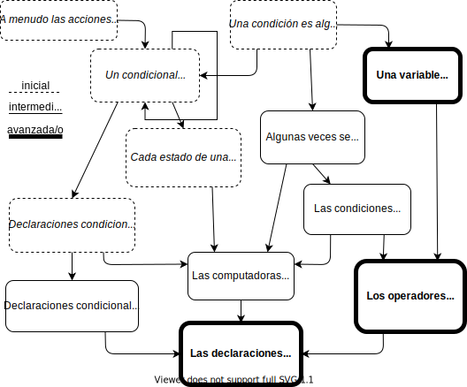

8 Conocimiento de la pedagogía del contenido
Estás leyendo la segunda edición en progreso y en castellano de Enseñar Tecnología en Comunidad (Teaching Tech Together). Este capítulo está siendo objeto de una profunda reestructuración y puede resultar confuso o incompleto.
Cada docente necesita tres cosas:
- conocimiento del contenido,
-
por ejemplo, como programar;
- conocimiento pedagógico general,
-
por ejemplo, comprensión de la psicología del aprendizaje; y
- conocimiento de la pedagogía del contenido,
-
que es el conocimiento específico acerca de cómo enseñar un concepto particular a un público en particular. En informática, el conocimiento de la pedagogía del contenido incluye qué ejemplos usar cuando se enseña, cómo se incluyen parámetros en una función o qué conceptos erróneos sobre etiquetas HTML anidadas son los más comunes.
Podemos agregar conocimiento técnico a este conjunto Koehler, Mishra, and Cain (2013), pero eso no cambia el punto clave: no es suficiente saber sobre el tema y cómo enseñar—tienes que saber cómo enseñar ese tema en particular Mayer (2004). Este capítulo resume algunos resultados de investigaciones sobre enseñanza de informática para añadir a tu colección sobre el conocimiento de la pedagogía del contenido.
Como con toda investigación, se requiere cierta precaución al interpretar los resultados:
- Las teorías cambian a medida que se obtienen más datos.
-
La investigación sobre educación en informática es una disciplina nueva: la Sociedad Americana de Educación en Ingeniería fue fundada en 1893 y el Consejo Nacional de Docentes de Matemática en 1920, pero la Asociación de Docentes de Informática no se creó hasta 2005. Mientras que existe un flujo constante de nuevo conocimiento en conferencias como [SIGCSE][sigcse], [ITiCSE][iticse] e [ICER][icer], simplemente no sabemos tanto sobre cómo aprender a programar como sí sabemos sobre aprender a leer, jugar un deporte o resolver cálculos simples.
- La mayoría de las personas en estos estudio
-
viven en sociedades occidentales, democráticas, industrializadas y con alto nivel de riqueza y educación y se los denomina WEIRD por Western, Education, Industrialized, Rich, and Democratic (en inglés), tal como señala Henrich, Heine, and Norenzayan (2010). Además, son principalmente jóvenes que estudian en instituciones educativas, ya que es la población a la que la mayoría de las personas que investigan tienen fácil acceso. Sabemos mucho menos sobre adultos, grupos marginados y estudiantes en ambientes educativos flexibles (estudiantes free-range), así como sobre usuarias/os finales programadoras/es, aún cuando son la mayoría.
Si esto fuera un ensayo académico, empezaría la mayoría de oraciones con frases como, “Algunas investigaciones parece indicar que…” Pero dado que las/los docentes reales que enseñan en aulas reales tienen que tomar decisiones independientemente de si las investigaciones tienen respuestas claras o no, este capítulo presenta las mejores conjeturas prácticas en lugar de sutiles posibilidades.
8.0.1 Jerga
Como cualquier especialidad, la investigación sobre educación en informática tiene jerga. CS1 refiere a un curso introductorio de un semestre de duración, donde las/los estudiantes aprenden variables, bucles y funciones por primera vez, mientras que CS2 refiere a un segundo curso que cubre las estructuras de datos básicas como pilas y colas, y CS0 se refiere a un curso introductorio para personas sin experiencia previa y que no tienen intención de continuar con computación de inmediato. Las definiciones completas de estos términos se encuentran en los [lineamientos del programa ACM][acm-curriculum] (Association for Computing Machinery, por sus siglas en inglés).
8.1 ¿Qué les estamos enseñando ahora?
Se sabe muy poco sobre qué se enseña en entrenamientos de programación intensivo e iniciativas free-range, en parte porque muchas personas son reticentes a compartir los programas. Sabemos más sobre lo que se enseña en instituciones Luxton-Reilly et al. (2017):
| Temas | % | Temas | % |
|---|---|---|---|
| Proceso de programación | 87% | Tipos de datos | 23% |
| Pensamiento abstracto para programación | 63% | Entrada/Salida | 17% |
| Estructuras de datos | 40% | Librerías | 15% |
| Conceptos orientados a objetos | 36% | Variables y asignación | 14% |
| Estructuras de control | 33% | Recursión | 10% |
| Operaciones y funciones | 26% | Punteros y administración de memoria | 5% |
Títulos de temas de alto nivel como estos pueden esconder una gran cantidad de fallas. Un resultado más tangible surge de Rich et al. (2017), quienes revisaron cien artículos y encontraron trayectorias de aprendizaje para clases de computación en escuelas primarias y secundarias. Sus resultados para la secuenciación, la repetición y los condicionales son esencialmente mapas conceptuales colectivos que combinan y racionalizan el pensamiento implícito y explícito de gran cantidad de docentes (?fig-pck-trajectory).
{#fig-pck-trajectory fig-alt = ““}
8.2 ¿Cuánto están aprendiendo?
Puede haber un mundo de distancia entre lo que enseñan las/los docentes y cuánto aprenden sus estudiantes. Para explorar cuánto se aprende, debemos usar otras medidas o hacer estudios directos. Tomando el enfoque tradicional, aproximadamente dos tercios de las/los estudiantes de nivel superior aprueban su primer curso de informática, con algunas variaciones dependiendo del tamaño de la clase, pero sin diferencias significativas a lo largo del tiempo o basadas en el lenguaje Bennedsen and Caspersen (2007),Watson and Li (2014).
¿Cómo afecta la experiencia previa a estos resultados? Para responder esto, Wilcox and Lionelle (2018) compararon el desempeño y la confianza de personas novatas con y sin experiencia previa en programación en CS1 y CS2 (ver más abajo). Encontraron que personas novatas con experiencia previa superaron a personas sin experiencia en un 10% en CS1, pero esas diferencias desaparecieron hacia el final de CS2. También encontraron que las mujeres con experiencia previa superaron a sus pares masculinos en todas las áreas, pero siempre tenían menos confianza en sus habilidades (Section 11.4).
En cuanto a estudios sobre cuánto aprenden las personas novatas, McCracken et al. (2001) presentaron un estudio internacional en múltiples espacios que luego fue replicado por Utting et al. (2013). De acuerdo al primer estudio, “…los decepcionantes resultados sugieren que muchas/os estudiantes no saben cómo programar al final de los cursos introductorios.” Más específicamente, “Para una muestra combinada de 216 estudiantes de cuatro universidades, la puntuación media fue de 22,89 sobre 110 puntos en los criterios generales de evaluación desarrollados para este estudio.” Este resultado puede hablar tanto de las expectativas de docentes como de la habilidad de las/los estudiantes, pero de cualquier manera, nuestra primera recomendación es mide y haz un seguimiento de los resultados de tal manera que se puedan comparar a través del tiempo para que puedas saber si tus lecciones se están volviendo más o menos efectivas.
8.3 ¿Qué conceptos erróneos tienen las personas novatas?
El Chapter 3 explicó por qué aclarar los conceptos erróneos a las personas novatas es tan importante como enseñarles estrategias para resolver problemas. La mayor confusión de las personas novatas—a veces llamada el “superbug” o “supererror” en programación—es la creencia de que las computadoras entienden lo que las personas quieren decir de la misma manera que cualquier ser humano lo haría Pea (1986). Nuestra segunda recomendación es entonces enseña a las personas novatas que las computadoras no entienden los programas, es decir, que llamar a una variable “precio” no garantiza que su valor sea realmente un precio.
Sorva (2018) muestra más de cuarenta conceptos erróneos que las/los docentes también pueden intentar aclarar, muchos de los cuales también se discuten en el estudio de Qian and Lehman (2017). Uno es la creencia de que las variables en los programas funcionan de la misma manera que en planillas de cálculo, es decir, que luego de ejecutar:
nota = 65
total = nota + 10
nota = 80
print(total)el valor de total será 90 en vez de 75 Kohn (2017). Este es un ejemplo de la forma en que las personas novatas construyen un modelo mental plausible pero erróneo haciendo analogías. Otras confusiones incluyen:
Una variable guarda la historia de los valores que le fueron asignados, es decir, recuerda cuál solía ser su valor.
Está garantizado que dos objetos con el mismo valor para sus atributos
nombreo identificaciónidson el mismo objeto.Las funciones son ejecutadas cuando se las define, o son ejecutadas en el orden en que son definidas.
La condición de un bucle
whilese evalúa constantemente, y el bucle se detiene tan pronto como se vuelve falso. Por el contrario, la condición de las sentenciasifes constantemente evaluada, y sus declaraciones son ejecutadas tan pronto como la condición se vuelve verdadera, independientemente de dónde se encuentre el flujo de control en ese momento.Las asignaciones modifican valores, es decir, después de
a = b, la variablebqueda vacía.
8.4 ¿Qué errores cometen las personas novatas?
Los errores que cometen las personas novatas nos indican qué priorizar cuando enseñamos, pero resulta que la mayoría de las personas que enseñan no saben cuán comunes son los diferentes tipos de errores. El estudio más importante es el de Brown and Altadmri (2017), que encontró que la falta de paréntesis y comillas son el tipo de error más común en programas Java escritos por personas novatas, además de tratarse el error más sencillo de resolver. Por otro lado, algunos errores (como poner la condición de un if en {} en vez de ()) se cometen solo una vez. No extraña que los errores que producen problemas de compilación son resueltos mucho más rápido que aquellos que no lo hacen. Algunos errores, en cambio, se repiten muchas veces, como llamar métodos con los argumentos incorrectos (p. ej. pasar una cadena de caracteres en vez de un número entero).
8.4.1 No es correcto versus No está resuelto
Una dificultad en una investigación como esta es distinguir los errores del trabajo en proceso. Por ejemplo, una estructura
ifvacía o un método que se define pero aún no se ha usado puede ser señal de que el código está incompleto más que señal de un error.
Brown and Altadmri (2017) también comparó los errores que las personas novatas realmente cometen con los que sus docentes pensaron que cometieron. Descubrieron que, “…las/los docentes llegaron a un escaso consenso sobre cuáles son los errores más frecuentes. Sus calificaciones tenían solo una correspondencia moderada con la de las/los estudiantes en los…datos y la experiencia de las/los docentes no tuvo ningún efecto en este nivel de acuerdo.” Por ejemplo, confundir = (asignación) con == (igualdad) no eran tan común como la mayoría de las/los docentes creían.
8.4.2 No solo por el código
Park, Dorn, and Forte (2015) recopiló datos de un editor HTML en línea durante un curso introductorio de desarrollo web y encontró que la mayoría de las/los estudiantes cometieron errores de sintaxis que permanecieron sin ser resueltos por semanas durante el curso. El 20% de esos errores estaban relacionados con reglas relativamente complejas que indican cuándo es válido que los elementos HTML estén anidados entre sí, pero el 35% estaba relacionado a sintaxis de etiquetas más simples que determinan cómo los elementos HTML están anidados. La tendencia de muchas/os docentes a decir “Pero las reglas son simples,” es un buen ejemplo del punto ciego de las personas expertas que se analiza en el Chapter 4…
8.5 ¿Cómo programan las personas novatas?
Soloway and Ehrlich (1984),Soloway (1986) son trabajos pioneros en la exploración de las estrategias de programación de personas novatas y expertas. El hallazgo clave es que las personas expertas saben al mismo tiempo el “qué” y el “cómo,” es decir, entienden qué poner en los programas y tienen un conjunto de patrones o plan para guiar su construcción. Las personas principiantes no tienen ninguna de las dos cosas, pero la mayoría de las/los docentes se enfocan únicamente en lo primero, a pesar de que los errores son usualmente causados por no tener una estrategia para resolver el problema, en lugar de falta de conocimiento sobre el lenguaje. Un trabajo reciente mostró la efectividad de enseñar cuatro habilidades distintas en un orden específico Xie et al. (2019):
| semántica del código | plantillas asociadas a objetivos | |
| leyendo | 1. leer el código y predecir su comportamiento | 3. reconocer plantillas y sus usos |
| escribiendo | 2. escribir la sintaxis correcta | 4. usar las plantillas para alcanzar objetivos |
Por lo tanto, nuestras siguientes recomendaciones son: haz que tus estudiantes lean código, luego lo modifiquen, luego lo escriban y además preséntales explícitamente patrones comunes y haz que practiquen usándolos. Muller, Ginat, and Haberman (2007) es uno de los tantos estudios que muestran los beneficios de enseñar patrones comunes de manera explícita. Descomponer los problemas en patrones comunes crea oportunidades naturales para crear y etiquetar sub-objetivos Margulieux, Guzdial, and Catrambone (2012),Margulieux, Catrambone, and Guzdial (2016).
8.6 ¿Cómo identifican y resuelven errores las personas novatas?
Una década atrás, McCauley et al. (2008) escribieron: “Es sorprendente el poco espacio que se dedica a los errores y cómo resolverlos en la mayoría de los libros introductorios de programación.” Poco ha cambiado desde entonces: hay cientos de libros sobre compiladores y sistemas operativos, pero solo unos pocos sobre depuración de errores y nunca he visto un curso de pregrado dedicado a este tema.
Lister et al. (2004),Lister, Fidge, and Teague (2009) encontraron que a muchas personas novatas les cuesta predecir el resultado de pocas líneas de código y seleccionar la salida correcta del código a partir de un conjunto de posibilidades cuando les decían lo que se suponía que el código debía hacer. Más recientemente, Harrington and Cheng (2018) encontraron que la brecha entre poder entender el código y poder escribirlo se ha cerrado en gran medida gracias a CS2, pero que las personas novatas que aún tienen esa brecha es probable que les vaya mal.
Nuestra quinta recomendación es entonces enséñales explícitamente a las personas principiantes cómo depurar errores. Fitzgerald et al. (2008),Murphy et al. (2008) encontraron que las personas que pueden resolver errores son buenas programando, pero no todas las personas que son buenas programando son buenas resolviendo errores. Aquellas personas que eran buenas programando usaron un depurador de errores simbólico para recorrer sus programas, rastrearon su ejecución manualmente, escribieron pruebas y releyeron las especificaciones frecuentemente; todos hábitos que se pueden enseñar. Sin embargo, rastrear la ejecución paso a paso a veces se usa de manera ineficaz: por ejemplo, una persona novata podría poner la misma declaración print en ambas partes de una estructura if-else. Las personas novatas también comentarían líneas de código que en realidad eran correctas al tratar de aislar un problema. Las/los docentes pueden cometer estos dos errores deliberadamente, señalarlos y corregirlos para ayudar a las personas novatas a aprender cómo resolverlos.
Enseñar a principiantes cómo depurar errores también puede ayudar a que las clases sean más simples de manejar. Alqadi and Maletic (2017) encontró que estudiantes con mayor experiencia resolvieron problemas de depuración de errores significativamente más rápido, pero que los tiempos variaron ampliamente: entre 4 a 10 minutos fue el rango típico para ejercicios individuales, lo cual significa que algunas/os estudiantes necesitan entre 2 y 3 veces más tiempo que otras/os para resolver el mismo ejercicio. Para ayudar a que el progreso de todo el grupo sea más uniforme, es conveniente enseñarles a quienes resuelven los ejercicios más lentamente qué están haciendo las personas más rápidas.
La depuración de errores depende de ser capaz de leer el código, algo que múltiples estudios han demostrado que es la forma más efectiva de encontrar errores Basili and Selby (1987),Kemerer and Paulk (2009),Bacchelli and Bird (2013). La rúbrica de calidad de código desarrollada por Stegeman, Barendsen, and Smetsers (2014),Stegeman, Barendsen, and Smetsers (2016) es una buena lista de verificación de elementos a revisar, aunque se presenta mejor de a partes en lugar de toda junta.
Hacer que las/los estudiantes lean código y resuman su comportamiento es un buen ejercicio (Section 6.1), pero frecuentemente lleva mucho tiempo practicarlo en clase. Hacer que las/los estudiantes predigan la salida de un programa justo antes de que sea ejecutado, por otro lado, ayuda a reforzar el aprendizaje (Section 10.11) y además les da la oportunidad ideal para hacer el tipo de preguntas “qué pasaría si”. Las/los docentes o estudiantes pueden además rastrear los cambios en las variables a medida que avanzan, algo que Cunningham et al. (2017) encontró efectivo (?sec-exercises-tracing).
8.7 ¿Qué pasa con las pruebas (tests)?
Las personas novatas en programación parecen tan reacias a testear software como aquellas personas profesionales. No hay duda de que hacerlo es valioso—Carter and Hundhausen (2017) encontró que las personas novatas con un alto rendimiento dedican mucho tiempo a testear el código, mientras que las personas novatas con un bajo rendimiento dedican mucho más tiempo a trabajar en el código con errores—y muchas/os docentes requieren que las/los estudiantes escriban tests en las actividades. ¿Pero qué tan bien lo hacen? Una posible respuesta proviene de Brian et al. (2015), quienes calificaron el código de las/los estudiantes según la cantidad de situaciones, definidas por la/el docente, que pasaban correctamente las pruebas de los programas. A la inversa, estos autores también calificaron los casos de prueba escritos por las/los estudiantes de acuerdo a cuántos errores (deliberadamente introducidos en el código) podían detectar.
Los autores encontraron que los tests de las personas novatas usualmente tienen un bajo alcance (es decir, no testean gran parte del código) y que usualmente testean muchas cosas al mismo tiempo, lo que dificulta determinar las causas de los errores.
Otra posible respuesta a la pregunta “¿Qué tan bien testean código las personas novatas?” proviene de Edwards and Shams (2014), quienes examinaron todos los errores en el código programado por personas novatas y a su vez identificaron aquellos errores detectados por el conjunto de pruebas (test) de personas novatas. En este trabajo se encontró que las pruebas de personas novatas solo detectaban un promedio de 13,6% de los errores presentes en la totalidad de los programas. Además, el 90% de las pruebas de las personas novatas fueron muy parecidas, lo que indica que las personas novatas escriben pruebas principalmente para confirmar que el código está haciendo lo que se supone que debe hacer en lugar de encontrar situaciones en las que el código no hace lo que se supone que debe hacer.
Un enfoque para enseñar mejores prácticas para generar pruebas es definir un problema de programación proporcionando un conjunto de pruebas que deben ser pasadas en lugar de una descripción (?sec-exercises-classics). Sin embargo, antes de hacerlo tómate un momento para ver cuántas pruebas has escrito en tu propio código recientemente y luego decide si estás enseñando lo que crees que las personas deberían hacer, o lo que ellos (y tú) realmente hacen.
8.8 ¿Importa el lenguaje?
La respuesta corta es “sí”: las personas novatas aprenden a programar más rápido y aprenden más usando herramientas basadas en bloques como Scratch (<a figure=“f:pck-scratch) Weintrop and Wilensky (2017). Una razón es que esos sistemas basados en bloques reducen la carga cognitiva al eliminar la posibilidad de cometer errores de sintaxis. Otra razón es que esas interfaces de bloques promueven la exploración de una manera que el texto no hace: como todas las buenas herramientas, Scratch se puede aprender accidentalmente Maloney et al. (2010).
Pero, ¿qué sucede luego de los bloques? Chen et al. (2018) encontró que las personas cuyo primer lenguaje de programación fue gráfico, tenían calificaciones más altas en cursos introductorios de programación en comparación con las personas cuyo primer lenguaje era textual cuando los lenguajes se aprendieron durante o antes de los primeros años de adolescencia. Nuestra sexta recomendación es preséntales interfaces basadas en bloques a niñas/os y adolescentes antes de avanzar a sistemas basados en texto. La calificación de edad corresponde a que Scratch deliberadamente parece destinado a usuarias/os jóvenes, y puede ser difícil convencer a personas adultas de que lo tomen en serio.
<img src=“scratch-program.png” alt=“Scratch
Scratch probablemente ha sido estudiado más que cualquier otra herramienta de programación. Un ejemplo es Aivaloglou and Hermans (2016), quienes analizaron más de 250.000 proyectos de Scratch y encontraron (entre otras cosas) que alrededor del 28% de esos proyectos tenían algunos bloques que nunca eran usados o activados. Como en la sección anterior sobre los programas en Java incompletos versus incorrectos, las autoras plantean la hipótesis de que las/los usuarias/os pueden estar utilizando estos bloques como borrador para hacer un seguimiento de las partes del código que no quieren eliminar (todavía). Otros ejemplos son Grover and Basu (2017),Mladenović, Boljat, and Žanko (2017), que estudiaron a personas novatas aprendiendo sobre bucles en Scratch, Logo y Python. Encontraron que los conceptos erróneos sobre bucles se minimizan cuando se usa un lenguaje basado en bloques en lugar de un lenguaje basado en texto. Además, a medida que las tareas se vuelven más complejas (como el uso de bucles anidados) las diferencias son mayores.
8.8.1 Más difícil de lo necesario
Las personas que crean lenguajes de programación hacen que esos lenguajes sean más difíciles de aprender al no realizar pruebas básicas de usabilidad. Por ejemplo, Stefik and Siebert (2013) encontraron que, “…las tres palabras más comunes para generar bucles en ciencias de la computación,
for,whileyforeach, fueron calificadas como las tres opciones más anti-intuitivas por personas que no programan.” Su trabajo muestra que sintaxis al estilo de C (como se usa en Java y Perl) son tanto más difíciles de aprender para personas novatas como una sintaxis diseñada de manera aleatoria, pero que la sintaxis de lenguajes como Python y Ruby es significativamente más fácil de aprender, y la sintaxis de un lenguaje cuyas características son probadas antes de incorporarse es aún más fácil. Stefik et al. (2017) es un útil y breve resumen de lo que realmente sabemos sobre el diseño de lenguajes de programación y por qué creemos que es cierto, mientras que Guzdial (2016) expone cinco principios que los lenguajes de programación para estudiantes deberían seguir.
8.8.2 Programación orientada a objetos
Los objetos y clases son herramientas poderosas para personas con experiencia en programación, y muchas/os docentes promueven un enfoque de primero objetos para enseñar a programar (aunque a veces no concuerdan exactamente con lo que eso significa Bennedsen and Schulte (2007)). Sorva and Seppälä (2014) describen y motivan este enfoque, y Kölling (2015) describe tres generaciones de herramientas designadas para apoyar a personas novatas para que programen en ambientes orientados a objetos.
Introducir objetos temprano tiene algunos desafíos. Miller and Settle (2016) encontró que la mayoría de las personas novatas que usan Python tenían problemas para entender self (que refiere al objeto actual): las personas lo omitieron en las definiciones de métodos, no lo usaron cuando hacían referencia a los atributos del objeto, o tuvieron ambas dificultades. Ragonis and Shmallo (2017) encontró algo similar en estudiantes de nivel secundario, y además encontró que docentes de secundaria usualmente tampoco tenían claro el concepto. En resumen, recomendamos que, como docente, comiences con funciones en vez de objetos, es decir, que no les enseñes a tus estudiantes cómo definir clases hasta que comprendan las estructuras básicas de control y los tipos de datos.
8.8.3 Declaración de tipos
Las personas que programan han discutido durante décadas acerca de si los tipos de datos de variables deberían ser declarados o no, usualmente basándose en su experiencia personal como profesionales en lugar de tener en cuenta el tipo de datos. Endrikat et al. (2014),Fischer and Hanenberg (2015) encontraron que pedir a personas novatas que declaren los tipos de variables suma cierta complejidad a los programas, pero se compensa rápidamente al actuar como documentación del uso de los métodos —en particular, evita preguntas sobre qué métodos están disponibles y cómo usarlos.
8.8.4 Nombrando variables
Kernighan and Pike (1999) escribieron: “A menudo se alienta a quienes programan a usar nombres de variables largos independientemente del contexto. Esto es un error: la claridad a menudo se logra siendo breves.” Muchas/os programadoras/es creen esto, pero Hofmeister, Siegmund, and Holt (2017) encontraron que usar palabras completas en nombres de variables condujo, en promedio, a una comprensión un 19% más rápida en comparación con letras y abreviaturas. En contraste, Beniamini et al. (2017) encontraron que el uso de nombres de variables de una sola letra no afectaba la capacidad de las personas principiantes de modificar el código. Esto puede deberse a que sus programas son más cortos que los de profesionales o porque algunos nombres de variables de una sola letra tienen tipos y significados implícitos. Por ejemplo, la mayoría de las personas que programan asumen que i, j y n son enteros y que s es una cadena de caracteres, mientras que x, y y z son números de punto flotante o enteros más o menos equivalentemente.
¿Qué tan importante es esto? Binkley et al. (2012) reportaron que leer y comprender el código es fundamentalmente distinto de leer prosa: “…la estructura más formal y la sintaxis del código fuente permite a quienes programan asimilar y comprender partes del código rápidamente independientemente del estilo. En particular…las guías y los planes de programación juegan un papel importante en la comprensión.” También encontró que a las/los desarrolladoras/es con experiencia no les afecta el estilo del identificador, entonces nuestra recomendación es utilizar un estilo coherente en todos los ejemplos. Dado que la mayoría de los lenguajes tienen guías de estilo (por ejemplo, [PEP 8][pep-8] para Python) y herramientas para verificar que el código siga esas pautas, nuestra recomendación completa es utiliza herramientas para garantizar que todos los ejemplos de código se adhieran a un estilo consistente.
8.9 ¿Ayudan mejores mensajes de error?
Los mensajes de error incomprensibles son una fuente importante de frustración para las personas novatas (y también para personas experimentadas). Por lo tanto, en varias investigaciones se exploró si mejores mensajes de error ayudan a evitar esta frustración. Por ejemplo, Becker et al. (2016) reescribieron algunos de los mensajes del compilador de Java para que en lugar de:
C:\stj\Hola.java:2: error: cannot find symbol
public static void main(string[ ] args)
^
1 error
Process terminated ... there were problems.las personas vean:
Looks like a problem on line number 2.
If "string" refers to a datatype, capitalize the 's'!Efectivamente, las personas novatas que recibieron estos mensajes repitieron menos los errores y cometieron menos errores en general.
Barik et al. (2017) fueron más allá y usaron seguimiento ocular para mostrar que a pesar de las quejas de las personas que escriben los compiladores, las personas realmente leen los mensajes de error—de hecho, pasan del 13 al 25% de su tiempo haciendo eso. Sin embargo, leer mensajes de error resulta ser tan difícil como leer el código fuente, y la dificultad en leer los mensajes de error predice fuertemente el desempeño de la tarea. Por lo tanto, al enseñar muéstrales a tus estudiantes cómo leer e interpretar mensajes de error. Marceau, Fisler, and Krishnamurthi (2011) tiene una rúbrica con respuestas a los mensajes de error que puede ser útil para calificar ese tipo de ejercicios.
8.9.1 ¿Ayuda la visualización?
Visualizar la ejecución de un programa es una idea siempre popular, y herramientas como el tutor de Python en línea Guo (2013) y [Loupe][loupe] (que muestra cómo funciona un bucle de eventos de JavaScript) son útiles para enseñar. Sin embargo, las personas aprenden más al construir visualizaciones que al ver visualizaciones construidas por otras personas Stasko et al. (1998),Cetin and Andrews-Larson (2016), entonces, ¿las visualizaciones realmente ayudan al aprendizaje?
Para responder esto, Cunningham et al. (2017) replicaron un estudio previo sobre los tipos de esquemas que realizan las/los estudiantes cuando rastrean la ejecución del código. Encontraron que no hacer esquemas se correlaciona con un menor éxito, mientras que el seguimiento de los cambios de valor de una variable escribiendo los nuevos valores cerca de su nombre a medida que cambian fue la estrategia más efectiva.
Un posible elemento de confusión que revisaron es el tiempo: dado que quienes hacen esquemas llevan significativamente más tiempo resolver los problemas, ¿lo hacen mejor solo porque piensan por más tiempo? La respuesta es no: no encontraron correlación entre el tiempo que se tomaron y el puntaje alcanzado. Nuestra recomendación es, por lo tanto, enseña a rastrear los valores que toman las variables al depurar errores.
8.9.2 Diagramas de flujo
Un hallazgo que a menudo se pasa por alto sobre la visualización es que las personas entienden mejor los diagramas de flujo que el pseudocódigo si ambos están igualmente bien estructurados Scanlan (1989). Los estudios previos que señalaban que el pseudocódigo superaba a los diagramas de flujo, usaron pseudocódigo estructurado pero diagramas de flujo desordenados: cuando se niveló el campo de juego, se observó que a las personas novatas les fue mejor con la representación gráfica.
8.10 ¿Qué más podemos hacer para ayudar?
Vihavainen, Airaksinen, and Watson (2014) examinó la mejora promedio en las tasas de aprobación de varios tipos de intervenciones en clases de programación. Señalan que hay muchas razones para tomar sus conclusiones con cautela: las prácticas de enseñanza previas al cambio rara vez se establecen claramente, la calidad del cambio no es juzgada, y solo el 8.3% de los estudios reportaron resultados negativos. Entonces, o hay un sesgo al reportar resultados, o la forma en la que enseñamos en este momento es la peor posible y cualquier cosa sería una mejora. Como muchos otros estudios discutidos en este capítulo, en este trabajo sólo estaban observando clases universitarias, por lo que sus hallazgos pueden no ser generalizables a otros grupos.
Con esas advertencias en mente, los autores encontraron diez cosas que las/dos docentes puede hacer para mejorar los resultados (<a figure=“f:pck-interventions):
- Colaboración:
-
Actividades que fomenten la colaboración entre las/los estudiantes, ya sea en aulas o en laboratorios.
- Cambio del contenido:
-
Se modificaron o actualizaron partes del material.
- Contextualización:
-
El contenido y las actividades del curso se alinearon con un contexto específico, como juegos o medios.
- CS0:
-
Creación de un curso preliminar a tomar antes del curso introductorio de programación; podría organizarse solo para algunas personas (por ejemplo, si están en riesgo de abandonar).
- Temática de juego:
-
Se introdujo una componente de juego en el curso.
- Esquema de calificación:
-
Un cambio en el sistema de calificación, como, por ejemplo, aumentar la importancia de las actividades de programación y reducir la del examen.
- Trabajo en equipos:
-
Actividades con un mayor compromiso de trabajo en grupo, como el aprendizaje en equipo y cooperativo.
- Recursos multimedia:
-
Actividades que usen explícitamente el uso de recursos multimedia (Chapter 11).
- Apoyo de colegas:
-
El apoyo de pares en forma de parejas, grupos, mentoras/es contratadas/os o tutorías.
- Otro apoyo:
-
Un término general para todas las actividades de apoyo, por ejemplo, mayor cantidad de horas docentes, canales de ayuda adicionales, etc.
<img src=“interventions-scaled.png” alt=“Efectividad de las intervenciones
Esta lista destaca la importancia del aprendizaje cooperativo. Beck and Chizhik (2013) analizaron este tipo de aprendizaje específicamente durante tres años académicos en cursos a cargo dos docentes diferentes y encontraron beneficios significativos en general y para muchos subgrupos. Las personas que cooperaron obtuvieron calificaciones más altas y dejaron menos preguntas en blanco en el examen final, lo que indica una mayor autoeficacia y disposición para depurar cosas.
8.10.1 Computación sin código
Escribir código no es la única forma de enseñar a las personas a programar: hacer que las personas novatas trabajen en ejercicios de creatividad computacional mejora sus calificaciones en varios niveles Shell et al. (2017). Un ejercicio típico es describir un objeto cotidiano (como un clip o un cepillo de dientes) en términos de sus entradas, salidas y funciones. Este tipo de enseñanza a veces es llamada ciencias de la computación desenchufada; La página web [CS Unplugged][cs-unplugged-es] tiene lecciones y ejercicios para este tipo de enseñanza.
8.11 ¿Qué sigue?
Para aquellas personas que quieran profundizar, Fincher and Robins (2019) es un completo resumen de investigación sobre educación en informática y Ihantola et al. (2016) resume los métodos que estos estudios usan más frecuentemente. Espero que algún día tengamos catálogos como Ojose (2015) y más materiales para capacitar docentes como Hazzan, Lapidot, and Ragonis (2014),Guzdial (2015),Sentance, Barendsen, and Schulte (2018) para ayudarnos a enseñar mejor.
La mayor parte de la investigación mencionada en este capítulo fue financiada con fondos públicos pero tenemos que pagar para leerla: rompí la ley aproximadamente 250 veces para descargar trabajos científicos de páginas web como [Sci-Hub][sci-hub] mientras escribía este libro. Espero que llegue el día en que nadie tenga que acceder al conocimiento científico de esta manera; si investigas, por favor ayuda a que ese día se acerque publicando tu trabajo en lugares de acceso abierto.
8.12 Ejercicios
8.12.1 Conceptos erróneos de tus estudiantes (grupos pequeños/15’)
Trabajando en grupos pequeños, vuelvan a leer la Section 8.3 y escriban una lista de conceptos erróneos que piensan que pueden tener sus estudiantes. ¿Qué tan específicos son? ¿Cómo verificarían que tan precisa es su lista?
8.12.2 Revisando errores comunes (individual/20’)
Estos errores comunes corresponden a una lista más larga en Sirkiä and Sorva (2012):
- Asignación invertida:
-
La/el estudiante asigna el valor del lado izquierdo de la variable al lado derecho de la variable en vez de hacerlo al revés.
- Rama equivocada:
-
La/el estudiante piensa que el código del cuerpo de un
ifcorre, aun si la condición es falsa. - Ejecutar una función en vez de definirla:
-
Las/los estudiantes creen que una función se ejecuta a medida que es definida.
Escribe un ejercicio para chequear que tus estudiantes no están cometiendo cada uno de estos errores.
8.12.3 Código desarmado (parejas/15’)
Cheng and Harrington (2017) describen ejercicios en los que las/los estudiantes reconstruyen el código que ha sido desarmado al eliminar comentarios, borrar o reemplazar líneas de código, al mover líneas, etc. El rendimiento en estos ejercicios se correlaciona fuertemente con el rendimiento en las evaluaciones en las que las personas deben escribir código, pero estas preguntas requieren menos trabajo para evaluar. Toma la solución de un ejercicio de programación que hayas creado en el pasado y desármalo de dos maneras distintas. Intercambia el ejercicio con tu pareja. Analicen cuánto tiempo les lleva responder correctamente los problemas elaborados por la otra persona.
8.12.4 El problema de la lluvia (parejas/10’)
Soloway (1986) presentó el problema de la lluvia, que se ha usado en muchos estudios posteriores sobre programación Fisler (2014),Simon (2013),Seppälä et al. (2015). Escribe un programa que repetidamente lea números enteros positivos hasta que llega a 99999. Después de llegar a 99999, el programa imprime el promedio de esos números leídos.
Resuelve el problema de la lluvia en el lenguaje de programación que prefieras.
Compara tu solución con la de tu pareja. ¿Qué hace tu programa que no hace el de tu colega y viceversa?
8.12.5 Roles de variables (parejas/15’)
Kuittinen and Sajaniemi (2004),Byckling, Gerdt, and Sajaniemi (2005),Sajaniemi et al. (2006) presentaron un conjunto de patrones de una sola variable que encuentro muy útil en la enseñanza de personas novatas:
- Valor fijo:
-
Un elemento que no toma un nuevo valor después de ser inicializado.
- Paso a paso:
-
Un elemento que pasa por una sucesión sistemática y predecible de valores.
- Caminante:
-
Un elemento que atraviesa una estructura de datos.
- Elemento más reciente:
-
Un elemento que guarda el último valor encontrado al pasar por una sucesión de valores.
- Elemento más buscado:
-
Un elemento que guarda el mejor o el valor más apropiado encontrado hasta el momento.
- Recolector:
-
Un elemento que acumula el efecto de valores individuales.
- Seguidor:
-
Un elemento que siempre obtiene su nuevo valor a partir del valor anterior de algún otro elemento.
- Marca unidireccional:
-
Un elemento de datos de dos valores que no puede obtener su valor inicial una vez que su valor se ha cambiado.
- Temporal:
-
Un elemento que contiene un valor solamente por poco tiempo.
- Organizador:
-
Una estructura de datos que guarda elementos que pueden ser reordenados.
- Contenedor:
-
Una estructura de datos que guarda elementos que pueden ser eliminados.
Elige un programa de 5 a 15 líneas y clasifica sus variables usando estas categorías. Compara tus clasificaciones con tu pareja. En los casos en los que no estuvieron de acuerdo, ¿entendieron el punto de vista de la otra persona?
8.12.6 ¿Qué estás enseñando? (individual/10’)
Compara los temas que enseñas con la lista desarrollada en Luxton-Reilly et al. (2017) (Section 8.1). ¿Qué temas tratas? ¿Qué temas no incluyes? ¿Qué temas adicionales incluyes pero no están en la lista?
8.12.7 Actividades beneficiosas (individual/10’)
Mira la lista de intervenciones desarrolladas por Vihavainen, Airaksinen, and Watson (2014) (Section 8.10). ¿Cuáles de estas cosas ya haces en tus clases? ¿Cuáles podrías agregar fácilmente? ¿Cuáles son irrelevantes?
8.12.8 Conceptos erróneos y desafíos (grupos pequeños/15’)
El sitio [Desarrollo Profesional para la Enseñanza de Principios de CS][pd4cs] incluye [una lista detallada de conceptos erróneos de estudiantes y ejercicios][pd4cs-misconceptions]. Trabajando en grupos pequeños, elige una sección (por ejemplo, estructura de datos o funciones) y revisa la lista. ¿Cuáles de estos conceptos erróneos recuerdas haber tenido cuando eras estudiante? ¿Cuáles tienes todavía? ¿Cuáles has visto en tus estudiantes?
8.12.9 ¿Qué es lo que más te importa? (toda la clase/15’)
Denny et al. (2019) les pidieron a varias personas que propongan y califiquen preguntas de investigación sobre educación en informática. Encontraron que no había superposición entre las preguntas que más les importaban a las/los investigadoras/es y las que les interesaban a quienes no investigaban. Las preguntas favoritas de las/los investigadoras/es fueron:
¿Qué conceptos fundamentales de programación son los más desafiantes para las/los estudiantes?
¿Qué estrategias de enseñanza son más efectivas cuando se trata de una amplia gama de experiencias previas en clases introductorias de programación?
¿Qué afecta la capacidad de las/los estudiantes para generalizar a partir de ejemplos de programación simples?
¿Qué prácticas de enseñanza son más efectivas para enseñar computación a niñas/os?
¿Qué tipo de problemas de una clase de computación resultan más interesantes para las personas?
¿Cuáles son las formas más efectivas de enseñar programación a varios grupos?
¿Cuáles son las formas más efectivas de escalar la educación informática para llegar a la población general de estudiantes?
Mientras que las preguntas más importantes para las personas que no investigan fueron:
¿Cómo y cuándo es mejor dar retroalimentación a las/los estudiantes sobre su código para mejorar el aprendizaje?
¿Qué tipo de ejercicios de programación son más efectivos al enseñar a estudiantes de Ciencias de la Computación?
¿Cuáles son los méritos relativos del aprendizaje basado en proyectos, las clases y el aprendizaje activo, para estudiantes de computación?
¿Cuál es la forma más efectiva de hacer comentarios a las/los estudiantes en las clases de programación?
Al dividir los problemas en tareas más pequeñas mientras programan, ¿qué les resulta más difícil de aprender a las personas?
¿Cuáles son los conceptos clave que las/los estudiantes deben entender en las clases introductorias de computación?
¿Cuáles son las formas más efectivas de desarrollar competencia en estudiantes de disciplinas no informáticas?
¿Cuál es el mejor orden para enseñar conceptos y habilidades básicas en informática?
Haz que cada persona de la clase, de forma independiente, le otorgue un punto a las ocho preguntas que más les interese, de cualquiera de las dos listas. Luego, calcula el puntaje promedio para cada pregunta. ¿Cuáles son las preguntas más populares en tu clase? ¿En qué grupo están las preguntas más populares?